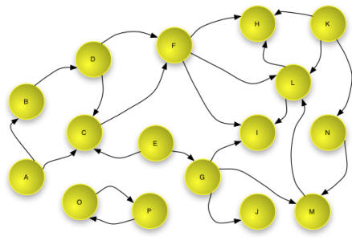

|
Open Archives Initiative Object Reuse and Exchange |
|
Open Archives Initiative Object Reuse and Exchange |
DO NOT USE THIS SPECIFICATION, see instead the CURRENT ORE SPECIFICATIONS.
This document was part of a beta release and has been superseded.
Open Archives Initiative Object Reuse and Exchange (OAI-ORE) defines standards for the description and exchange of aggregations of Web resources. This document provides a brief overview of the abstract data model underlying these standards, serializations, implementation with HTTP, and discovery. This user guide is one of several documents comprising the OAI-ORE specification and user guide. It is intended as the place to start for first time readers.
1. Introduction
1.1 Relationship between OAI-ORE and OAI-PMH
2. Foundations
2.1 Web Architecture
2.2 Semantic Web and RDF
2.3 Named Graphs
2.4 Namespaces and Vocabularies
3. Data Model
3.1 Aggregation
3.2 Resource Map
3.3 Reuse, reference and relationships to other Aggregations
4. Serialization
4.1 Serialization in Atom
4.2 Serialization in RDF/XML
5. HTTP implementation
6. Discovery
7. Trust and Authority
8. References
A. Acknowledgements
B. Change Log
The ORE Model makes it possible to associate identities with aggregations of web resources and to describe their structure and semantics. It does this by introducing the Resource Map (ReM), which is a network accessible resource that encapsulates a set of RDF statements. These statements describe an Aggregation as a resource with a URI, enumerate the constituents of the Aggregation, and the relationships among those constituents.
This primer first introduces the technology Foundations of the ORE specifications. It then summarizes the Data Model and Serialization formats. Issues with HTTP implementation and the Discovery of Resource Maps on the Web are outlined and, finally, Trust and Authority are very briefly discussed. Throughout this document there are links to more detailed expositions in other ORE User Guide and Specification documents.
OAI-ORE and OAI-PMH [OAI-PMH] are separate standards; OAI-ORE does neither extends nor replaces OAI-PMH. OAI-PMH is a protocol and an XML message format for the exchange of XML records (typically metadata). It supports selective or incremental harvesting which allows a client repository to maintain an up-to-date copy of records in all or part of a source repository.
ORE defines a data model for Resource Maps that describe aggregations of web resources, and recommends serialization formats for these Resource Maps. ORE is based on the Web Architecture where every information object is made available via a URI. No new protocol is defined. Exchange of Resource Maps is possible individually by direct web access, and via batch discovery mechanisms. OAI-PMH is one protocol that may be used to implement batch discovery.
A full description of Web Architecture concepts is contained in [Web Architecture]. In the ORE specifications, the use of the following terms from the Web Architecture should be interpreted as briefly summarized below:
The combination of these concepts forms what is commonly referred to
as the Web Graph, with nodes that are URIs (which identify
resources), from which representations are made available, and edges
that are links or typed relationships. An example of a Web Graph is shown
in figure 1 below. Note that this example
shows that the Web Graph is not necessarily connected - nodes
O and P link to each other but not to
other nodes in the graph.

Figure 1 - Example of a Web Graph
The ORE specifications also leverage Semantic Web concepts from RDF [RDF Concepts]. In RDF, the relationships between resources are described using sets of triples, each made up of three parts: a subject, a predicate and an object. Each triple states that a relationship of the type indicated by the predicate (a URI) holds between the resource identified by the subject (a URI) and the object (a URI or a literal). The subject is a URI that identifies the described resource; the object is either the URI of a second resource or a literal that identifies values such as numbers and dates by means of a lexical representation; and the predicate is a URI that identifies a type of relationship.
A set of RDF triples is referred to as an RDF Graph because it can be represented as a node and directed-edge diagram, in which each triple is represented as a node-edge-node link. The nodes of an RDF Graph are the subjects and objects of the constituent triples. In an RDF Graph each node is connected to at least one other node in the graph.
The description above is a slight simplification of the RDF model because it ignores the concept of blank nodes (sometimes called bnodes). Blank nodes are nodes that do not have a URI or a literal value yet may be the subject or object of triples. Their representation depends on description syntax. In the ORE model, blank nodes may be present in the description of author and contributor information. They are not described further in this primer and it is recommended that they be avoided through the use of URIs to identify authors and contributors wherever possible.
An example of an RDF Graph is shown in figure 2
below. The subject and predicate of a triple are always URIs (URIs are
indicated by the text in the yellow circle and shown with
bracketed syntax <A> in the table) and
the object may be a URI or a literal (shown as a blue rounded
rectangle in the graph and in quotations in the table).

Figure 2 - An example RDF Graph
The RDF relationship rdf:type
[RDFS] makes it possible to express types
for resources. Figure 3 below shows an example
of this. The objects of the triples with rdf:type predicates are
URIs, that denote classes or types.

Figure 3 - An example of rdf:type relationships
The ORE specifications build on the notion of a Named Graph
[Named Graph], which extends RDF to allow
the association of a URI (a name) with a set of triples (an RDF graph).
The Named Graph is a resource, identified by a URI. That URI can be
the subject or object of triples. These triples can, for example,
express a type for the Named Graph, or associate metadata properties
(e.g. dcterms:creator) with the Named Graph.
A Named Graph is NOT the RDF Graph itself. Instead it is a resource with a representation that encodes the set of triples that form the graph. The semantics are similar to RDF reification [RDF Semantics], in the manner that they allow the assertion of relationships between other resources and the set of triples. This provides the basis for signing, authority, and trust. This is relevant in this specification where Named Graphs are being used to provide descriptions of citable intellectual objects.
The ORE Model uses predicates from a number of vocabularies, including one specific to ORE, which are described in the ORE Vocabulary specification. The following namespace prefixes are used in these specifications.
| Prefix | Namespace URI | Description |
|---|---|---|
dc |
http://purl.org/dc/elements/1.1/ |
Dublin Core elements |
dcterms |
http://purl.org/dc/terms/ |
Dublin Core terms |
foaf |
http://xmlns.com/foaf/0.1/ |
Friend of a Friend terms |
ore |
http://www.openarchives.org/ore/terms/ |
ORE vocabulary terms |
owl |
http://www.w3.org/2002/07/owl# |
OWL vocabulary terms |
rdf |
http://www.w3.org/1999/02/22-rdf-syntax-ns# |
RDF vocabulary terms |
An Aggregation is a set of resources, and the resources in an Aggregation are called Aggregated Resources. An Aggregation does not have a representation (it is a non-information resource [HTTP Range]). However, it is made concrete through description by one or more Resource Maps.
In order to be able to talk about the Aggregation on the web, it
must have a URI (say A-1). So that applications and
clients can reference the Aggregation in an actionable fashion, the
Aggregation URI A-1 must yield or lead to a Resource
Map when dereferenced. Methods by which that may be achieved are
described in the HTTP implementation section.
A Resource Map is named graph identified by a protocol-based URI
(say ReM-1). It is an information resource from which
a representation is available when the URI ReM-1 is dereferenced.
The ORE Model requires that a Resource Map describe just one Aggregation.
There may be multiple Resource Maps in different formats that describe the same
Aggregation. Figure 4 shows a complete Resource Map
with statements indicated as arrows from subject resource to an object
resource or literal. The predicates are shown as labels on the arrows. The
remainder of this section explains the components of this Resource
Map step-by-step.

Figure 4 - An example Resource Map
If a Resource Map is identified by an HTTP URI ReM-1 then an
HTTP GET on ReM-1 must yield a serialization of the Resource Map.
Note also that ReM-1 appears as a node in the graph and is the
subject of several triples highlighted in the figure 5
below.
Figure 5 - Resource Map with Resource Map metadata highlighted
There are two items of essential metadata associated with the Resource Map.
The dcterms:creator predicate indicates the creation or
generation authority responsible for the Resource Map (shown as URI
X), and the dcterms:modified predicate indicated
the last modification or update time of the Resource Map (a literal indicated by
the blue rounded rectangle, say 2008-05-01T12:34:56Z). The
last predicate highlighted, ore:describes, is the link to the
Aggregation that this Resource Map describes (shown as A-1).
Figure 6 highlights the aggregation graph,
the combination of the
Aggregation node (A-1) and all of the Aggregated Resources
(AR-1, AR-2, AR-3) linked with
ore:aggregates predicates. Note that there is no ordering,
the Aggregation is just a set of Aggregated Resources. Order could
be added with other predicates but is not included in this Resource
Map.
Figure 6 - Resource Map with the aggregation graph highlighted
If the Aggregation denotes a resource that has other
identifiers then the other identifiers are expressed using the
ore:similarTo predicate. Figure 7
below shows a second identifier which is a DOI (labeled DOI-1).
It also shows typing of the aggregation with the predicate rdf:type
and type resource T-1 (indicating the semantic type
ore:Aggregation).
Figure 7 - Resource Map with the Aggregation metadata highlighted
Finally for this simple example, figure 8
below shows that there
may be relationships involving the Aggregated Resources. Perhaps
from AR-1 predicate R-1 indicates
dcterms:hasFormat to a substantially similar resource
in another format C,
and AR-3 has rdf:type T-2
(say foaf:Image).
Figure 8 - Resource Map with Aggregated Resource relationships highlighted
In practice most Resource Maps will be rather more complex.
There may be additional Metadata
about the Resource Map and Aggregation
[Data Model] such as a creation date
and rights information for the Resource Map, or authorship information
for the Aggregation. There may be additional
Relationships between the Aggregation
and Similar Resources where care must be taken to choose a
predicate with the appropriate semantics: rdfs:seeAlso
expressing a rather weaker similarity than ore:similarTo.
There may be additional Relationships
to other Resources and Types such as type information or
relations to any other resource.
To enable reuse is key goal of the ORE effort. To this end, the RDF Graph of a Resource Map - Advanced section of [Data Model] describes the use of Aggregated Resources while asserting that they are a constituent in another Aggregation, the nesting of Aggregations, and reference to Aggregated Resources via Proxies that "stand for" an Aggregated Resource in the context of an Aggregation. The use of Proxies is an optional but powerful mechanism that provides a means to reference in context and to make assertions that have meaning local to an Aggregation (but can still be combined with other global statements without creating contradictions).
When reusing Resource Maps and the Aggregations that they describe, it
is important to remember the distinction between these two entities. Statements
about ReM-1 are statements about the Resource Map and not the
Aggregation; statements about A-1 are statements about the
non-information resource that is the Aggregation.
Resource Maps may be serialized in several different formats, and three are described in these specifications. The choice of format depends on several factors including compatibility with expected data sources or clients:
The heart of the Atom Syndication Format is the notion of a feed, which aggregates a number of entries. The Atom feed corresponds to an ORE Aggregation and each Atom entry describes an Aggregated Resource. The Resource Map corresponds to an Atom feed document, the description of the feed or Aggregation.
The example Atom feed document below is an Atom serialization of the Resource
Map shown in the figure 4. This Resource
Map describes a very simple Aggregation of three images on the OAI website.
The Aggregation URI (A-1) is
http://www.openarchives.org/ore/0.9/primer-examples/foo and is given
by the /feed/id element.
The Resource Map URI (ReM-1) is
http://www.openarchives.org/ore/0.9/primer-examples/foo.atom
and is given by the href attribute of the /feed/link
element with rel="self" and type="application/atom+xml".
Certain feed level elements are reserved for Resource Map metadata and the
example includes the /feed/generator and /feed/updated
elements, which map from dcterms:creator and dcterms:modified
relations in the Model respectively. Most other feed level elements correspond with
properties of the Aggregation. The example shows the /feed/category and
/feed/link elements, which map from rdf:type and
ore:similarTo relations respectively. There are also empty
/feed/title and /feed/author elements because they
are necessary to create a valid Atom feed document but were not specified
in this very simple example.
<?xml version="1.0" encoding="utf-8"?>
<feed xmlns="http://www.w3.org/2005/Atom"
xmlns:rdf="http://www.w3.org/1999/02/22-rdf-syntax-ns#"
xmlns:dcterms="http://purl.org/dc/terms/">
<!-- Resource Map URI ReM-1 and Resource Map metadata -->
<link href="http://www.openarchives.org/ore/0.9/primer-examples/foo.atom"
rel="self" type="application/atom+xml"/>
<generator uri="http://www.openarchives.org/"/>
<updated>2008-05-01T12:34:56Z</updated>
<!-- Aggregation URI A-1 and metadata -->
<id>http://www.openarchives.org/ore/0.9/primer-examples/foo</id>
<category scheme="http://www.openarchives.org/ore/terms/"
term="http://www.openarchives.org/ore/terms/Aggregation" label="Aggregation" />
<link href="info:doi/10.1000/demo_DOI" rel="related"/>
<title/>
<author><name/></author>
<entry>
<!-- Aggregated Resource AR-1 -->
<id>http://oreproxy.org/r?what=http://www.openarchives.org/images/OA100.gif&where=http://www.openarchives.org/ore/0.9/primer-examples/foo</id>
<link href="http://www.openarchives.org/images/OA100.gif" rel="alternate"/>
<updated>2008-05-01T12:34:56Z</updated>
<title/>
<author><name/></author>
<rdf:Description rdf:about="http://www.openarchives.org/images/OA100.gif">
<dcterms:hasFormat rdf:resource="http://www.openarchives.org/images/OA200.gif"/>
</rdf:Description>
</entry>
<entry>
<!-- Aggregated Resource AR-2 -->
<id>http://oreproxy.org/r?what=http://www.openarchives.org/images/cni.gif&where=http://www.openarchives.org/ore/0.9/primer-examples/foo</id>
<link href="http://www.openarchives.org/images/cni.gif" rel="alternate"/>
<updated>2008-05-01T12:34:56Z</updated>
<title/>
<author><name/></author>
</entry>
<entry>
<!-- Aggregated Resource AR-3 -->
<id>http://oreproxy.org/r?what=http://www.openarchives.org/ore/logos/ore_logo_e_128.png&where=http://www.openarchives.org/ore/0.9/primer-examples/foo</id>
<link href="http://www.openarchives.org/ore/logos/ore_logo_e_128.png" rel="alternate"/>
<category scheme="http://xmlns.com/foaf/0.1/" term="http://xmlns.com/foaf/0.1/Image"/>
<updated>2008-05-01T12:34:56Z</updated>
<title/>
<author><name/></author>
</entry>
</feed>
Each Atom entry describes an Aggregated Resource as indicated in the comments.
The URI of each Aggregated Resource is indicated in the /feed/entry/link
element with rel="alternate". The identities of the entries themselves,
given in the /feed/entry/id elements, correspond to the URIs
of Proxies for Aggregated Resources in the ORE Model
[Data Model]. The values in the example are constructed
to use the ORE Proxy URI resolver described in
[ORE HTTP Implementation].
Proxies are necessary in the Atom serialization format and provide a means to
refer to the Aggregated Resources in the context of the Aggregation. We do not
describe them further in this document.
The first Aggregated Resource is related to an external resource with
the dcterms:hasFormat predicate. This predicate has no
corresponding Atom element so the information is included as RDF in the
rdf:Description element. The second Aggregated Resource has
no additional relationships and is thus a minimal Atom entry. The third
Aggregated Resource is typed foaf:Image and this relation
is given in the /feed/entry/category element.
Each Atom entry must have a /feed/entry/updated element
but this has no correspondence in the model. The values should indicate
the last modification time of the Atom entry. If this information is
not available then the last modification time for the Resource Map
(as given in /feed/updated) should be copied.
Similarly to the feed, empty /feed/entry/title and
/feed/entry/author elements are included because they
are necessary to create a valid Atom feed document but were not specified
in this very simple example. A rather more useful Resource Map including
this descriptive metadata is available at
http://www.openarchives.org/ore/0.9/primer-examples/foo2.atom.
Atom serialization is described in more detail in Resource Map Implementation in Atom, which follows the profile specified in Representing Resource Maps Using the Atom Syndication Format. There are some properties of the Atom Syndication Format that have no correspondence in the ORE Data Model. Most of these have a mapping to RDF vocabularies defined in [ORE Atom] and will thus survive round-trip conversion between Atom and RDF serializations.
The following example is an RDF/XML serialization of the Resource Map shown
in figure 4 and shown serialized in Atom above.
The RDF/XML syntax permits the encoding of a single feature in multiple ways
in XML. The example follows the recommendations of
Resource Map Implementation in RDF/XML.
Each rdf:Description node element contains child property elements
but those property elements do not contain further node elements. This is possible
because there are no bnodes in this example; if there were then a second level
of containment would be necessary. This is referred to as one level of "striping".
<?xml version="1.0" encoding="UTF-8" ?>
<rdf:RDF xmlns:rdf="http://www.w3.org/1999/02/22-rdf-syntax-ns#"
xmlns:ore="http://www.openarchives.org/ore/terms/"
xmlns:dcterms="http://purl.org/dc/terms/"
xmlns:foaf="http://xmlns.com/foaf/0.1/">
<!-- Resource Map metadata and link to Aggregation -->
<rdf:Description rdf:about="http://www.openarchives.org/ore/0.9/primer-examples/foo.atom">
<ore:describes rdf:resource="http://www.openarchives.org/ore/0.9/primer-examples/foo"/>
<rdf:type rdf:resource="http://www.openarchives.org/ore/terms/ResourceMap"/>
<dcterms:creator rdf:resource="http://www.openarchives.org/"/>
<dcterms:modified rdf:datatype="http://www.w3.org/2001/XMLSchema#date">2008-05-01T12:34:56Z</dcterms:modified>
</rdf:Description>
<!-- Aggregation and metadata -->
<rdf:Description rdf:about="http://www.openarchives.org/ore/0.9/primer-examples/foo">
<rdf:type rdf:resource="http://www.openarchives.org/ore/terms/Aggregation"/>
<ore:similarTofoaf rdf:resource="info:doi/10.1000/demo_DOI"/>
<ore:aggregates rdf:resource="http://www.openarchives.org/images/OA100.gif"/>
<ore:aggregates rdf:resource="http://www.openarchives.org/images/cni.gif"/>
<ore:aggregates rdf:resource="http://www.openarchives.org/ore/logos/ore_logo_e_128.png"/>
</rdf:Description>
<!-- AR-1 -->
<rdf:Description rdf:about="http://www.openarchives.org/images/OA100.gif">
<dcterms:hasFormat rdf:resource="http://www.openarchives.org/images/OA200.gif"/>
</rdf:Description>
<!-- AR-2 -->
<!-- no relationships with AR-2 except presence in Aggregation -->
<!-- AR-3 -->
<rdf:Description rdf:about="http://www.openarchives.org/ore/logos/ore_logo_e_128.png">
<rdf:type rdf:resource="http://xmlns.com/foaf/0.1/Image"/>
</rdf:Description>
</rdf:RDF>
[ RDF/XML, NTriples via Triplr ]
The example above matches figure 4 and does not include the proxy nodes introduced in the Atom serialization example. An extended RDF/XML serialization corresponding to the Atom example is available here (and NTriples via Triplr). A further extended example with additional descriptive metadata is available here (and NTriples via Triplr).
HTTP is the dominant protocol of the current Web and is the recommended protocol and associated URI scheme for ORE Aggregations and Resource Maps. The key model requirement is that dereference of an Aggregation URI must lead a client to a Resource Map describing the Aggregation. This is means that an Aggregation URI can be cited and then followed, and provides a mechanism for establishing that a Resource Map provides an authoritative description of the Aggregation.
The HTTP Implementation and Multiple Serializations guideline [ORE HTTP Implementation] described two ways to satisfy the requirement above. They are:
Cool URI implementation with some HTTP server
support, which is the recommended method.
This method is appropriate in applications where there is control over
the web infrastructure or it is desirable to serve Resource Maps in
multiple formats. Content negotiation or 303-style redirection is
used to link the Aggregation URI A-1 to the Resource Map.
Cool URIs [Cool URIs] are recommended and
allow for easy extensibility. Example URIs might be:
Aggregation: A-1 = http://example.org/foo Resource Map: ReM-1 = http://example.org/foo.atom
and additional serializations may be added following the URI pattern:
ReM-2 = http://example.org/foo.rdf
Simple implementation without server support
for content negotiation or redirection, which may be easier to implement.
The URI of the Aggregation A-1 may be constructed by appending
a fragment identifier #aggregation to the Resource Map URI
ReM-1. Example URIs might be:
Aggregation: A-1 = http://example.org/foo.atom#aggregation Resource Map: ReM-1 = http://example.org/foo.atom
This syntactic trick allows the creation of an Aggregation URI
A-1 that correctly yields the corresponding Resource Map
without the need for an additional infrastructure beyond a web server
to return the Resource Map from URI ReM-1.
These implementation strategies are discussed in detail, along with possible migration strategies and the implementation of Proxy URIs, in the HTTP Implementation and Multiple Serializations user guide.
Crawlers, harvesters and other clients must discover Resource Maps before the Aggregations they describe can be understood. Similarly, inclusion of an Aggregated Resource in an Aggregation must be ascertained before that context can be understood. There are a number of mechanisms allowing such discovery that are described in detail in the Resource Map Discovery user guide. Three broad approaches are outlined here:
Batch Discovery - in either a repository context where many local Resource Maps are known, or in the case of an aggregator which has details of Resource Maps provided on other servers, it may be appropriate to allow bulk harvesting of Resource Maps or locations. This may be achieved via OAI-PMH, SiteMaps, RSS or Atom feeds.
Resource Embedding: HTML - many Resource Maps will include or be
associated with human readable HTML pages. Some HTML elements
(link, a, img) provide means
to reference Resource Maps and Aggregations and it is expected that
browser plug-ins will be able to detect these and thus "understand"
the Aggregation context of a page. For example:
<link href="http://example.org/foo.atom" type="application/atom+xml" rel="resourcemap alternate" />
indicates the HTML page is associated with an Aggregation described by
a Resource Map http://example.org/foo.atom. The inclusion
of the alternate relation allows browsers to detect the
availability of the associated Atom feed.
Resource Embedding: HTTP - the proposed HTTP Link
header may be used to embed an Aggregation and/or Resource Map URI
in an HTTP response. The Link header follows the semantics
of the HTML link element but may be applied to resource
in both HTML and any other format. For example, the header:
Link: <http://example.org/foo.atom>; type="application/atom+xml"; rel="resourcemap"
might be included in the HTTP response with JPEG image to indicate that
the resource is in the Aggregation described by a Resource Map
http://example.org/foo.atom.
Notions of trust are notoriously complex, hard to establish, and yet essential for many applications. The ORE specifications are based on Web and Semantic Web standards which provide authority rules as a scaffolding to allow applications to establish trust. In particular, the ORE Model uses RDF which allows anyone to say anything about anything although understanding who or what is doing the saying may help one establish trust (or not). This section outlines elements of authority determination that may be used with Resource Maps.
Imagine being given the URI of an Aggregation. How can one find an authoritative Resource Map describing that Aggregation? The Web Architecture depends upon the URI owner to provide authoritative descriptions of the resource identified by the URI (see URI allocation [Web Architecture], [Linked Data Tutorial]. The ORE specifications follow this notion. It is expected that an attempt to dereference the URI of an Aggregation will lead (via one of the mechanisms described above) to an authoritative Resource Map. A Resource Map obtained via the Aggregation URI is thus considered an authoritative description of the Aggregation [ORE Date Model].
Note that even an authoritative Resource Map may contain statements that are not authoritative in other senses. For example, an Aggregated Resource may be described as being a JPEG image but dereference of the Aggregated Resource might lead to an authoritative representation and HTTP metadata for a PDF document.
The mechanisms provided to lead from an Aggregation to a Resource Map describing it, in combination with other discovery mechanisms, allow clients and agents to follow their noses to and from authoritative descriptions. Non-authoritative descriptions may also be useful but do not form part of this follow you nose Web.
This document is the work of the Open Archives Initiative. Funding for Open Archives Initiative Object Reuse and Exchange is provided by the Andrew W. Mellon Foundation, Microsoft, and the National Science Foundation. Additional support is provided by the Coalition for Networked Information.
This document is based on meetings of the OAI-ORE Technical Committee (ORE-TC), with participation from the OAI-ORE Liaison Group (ORE-LG). Members of the ORE-TC are: Chris Bizer (Freie Universität Berlin), Les Carr (University of Southampton), Tim DiLauro (Johns Hopkins University), Leigh Dodds (Ingenta), David Fulker (UCAR), Tony Hammond (Nature Publishing Group), Pete Johnston (Eduserv Foundation), Richard Jones (Imperial College), Peter Murray (OhioLINK), Michael Nelson (Old Dominion University), Ray Plante (NCSA and National Virtual Observatory), Rob Sanderson (University of Liverpool), Simeon Warner (Cornell University), and Jeff Young (OCLC). Members of ORE-LG are: Leonardo Candela (DRIVER), Tim Cole (DLF Aquifer and UIUC Library), Julie Allinson (JISC), Jane Hunter (DEST), Savas Parastatidis (Microsoft), Sandy Payette (Fedora Commons), Thomas Place (DARE and University of Tilburg), Andy Powell (DCMI), and Robert Tansley (Google, Inc. and DSpace)
We also acknowledge comments from the OAI-ORE Advisory Committee (ORE-AC).
| Date | Editor | Description |
|---|---|---|
| 2008-07-11 | simeon | typos corrected, thanks to Hussein Suleman |
| 2008-06-02 | simeon | public beta 0.9 release |
| 2008-04-03 | simeon | public alpha 0.3 release |
| 2008-03-02 | simeon | public alpha 0.2 release |
| 2008-01-08 | simeon | correct N3 example |
| 2007-12-10 | simeon | public alpha 0.1 release |
| 2007-10-15 | simeon | alpha release to ORE-TC |

This work is licensed under a Creative Commons Attribution-Noncommercial-Share Alike 3.0 Unported License.
Use of this page is tracked to collect anonymous traffic data. See OAI privacy policy.